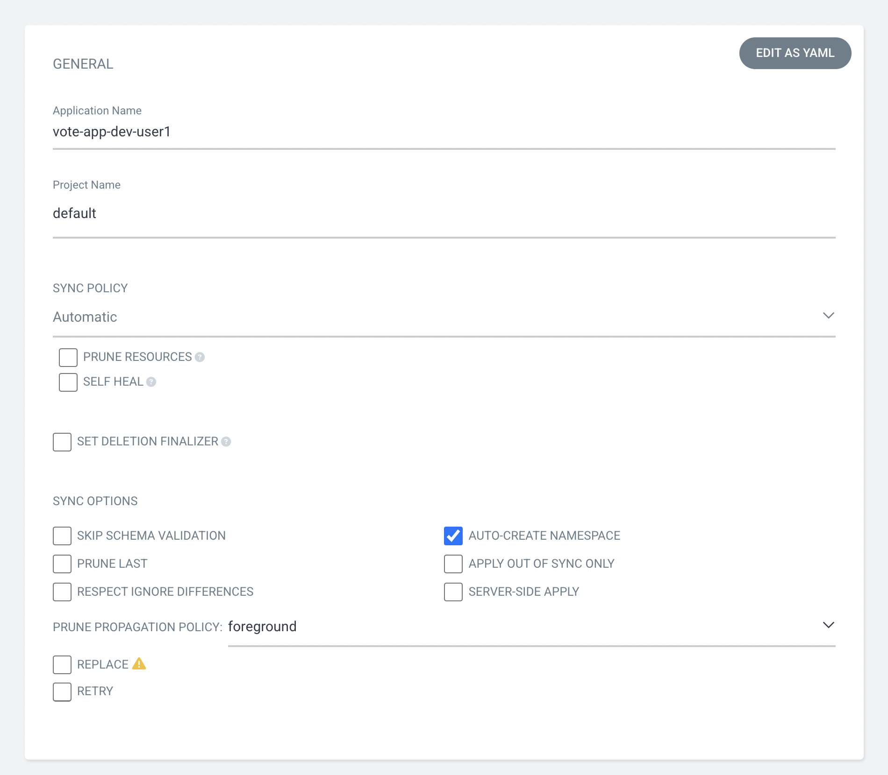
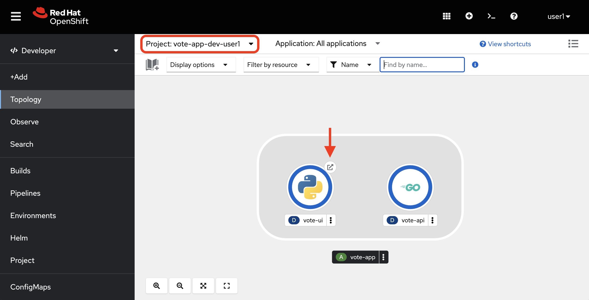
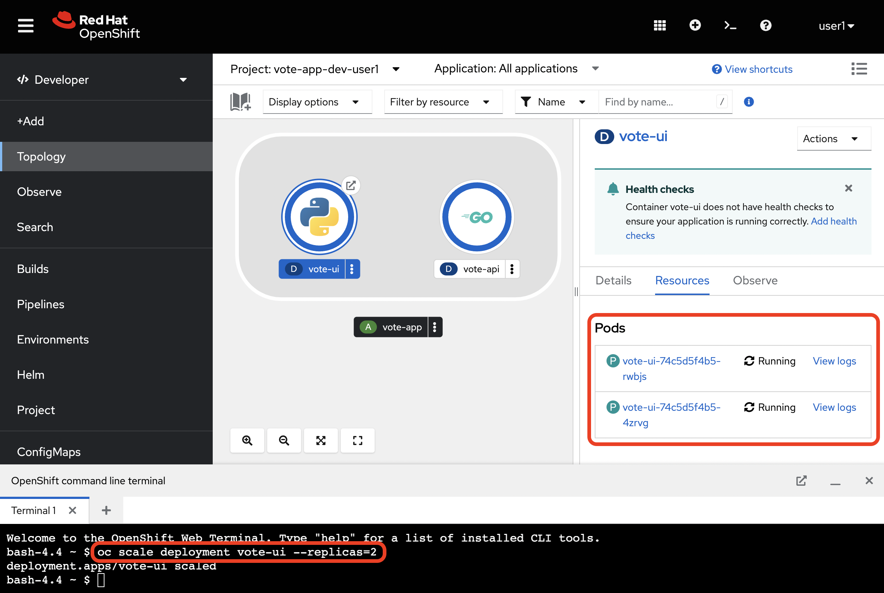

Workshop Development - Argo CD The next step is to deploy the Vote App to the vote-app-dev-%USERID% environment using Argo CD. This will allow us to view the application before it reaches production and make necessary changes throughout our development flow. We’ll also use the OpenShift Web Terminal to scale up the replicas for one of the deployments and learn how to use Argo CD to manage application drifts and syncing. Creating a new application using Argo CD Let’s use Argo CD to create a new application. While you can access Argo CD from the Lab Guides or by using this Argo CD link. You can also visit Argo CD from your OpenShift cluster. Within the Developer perspective, navigate to the argocd-%USERID% project, and visit the Topology page. Click on the Argo CD route to visit the Argo CD dashboard. You’ll be prompted to log in to Argo CD, and you can use the Login with OpenShift button to do so. Within the Argo CD web console, click the + New App button. This will open the New Application form, where we can fill in the necessary information to create a new application in our development environment. Fill in the following information, many of which may auto-fill when selected: Application Name: vote-app-dev-%USERID% Project Name: default Sync Policy: Automatic Self Heal: Disabled Auto-Create Namespace: Enabled Repository URL: http://gitea.gitea.svc:3000/%USERID%/vote-app-gitops Revision: main Path: environments/dev Cluster URL: https://kubernetes.default.svc Namespace: vote-app-dev-%USERID%  When finished, click the CREATE button in the top left-hand corner. This will create the application in Argo CD and begin the syncing process. Viewing the application in Argo CD Now, let’s view the application in the Argo CD dashboard. After creating the application, you should be redirected to the application details page. If not, click on the application’s name to view the application details. Here, you’ll see the vote-app-dev-%USERID% application’s health, sync status, and associated resources. Your application may sync very quickly, with a green Synced status, however, you may see a yellow OutOfSync status. We can see the associated resources within the vote-app-dev-%USERID% application, including the vote-ui deployment, vote-api deployment, and vote-ui route. We can also see the services associated with each deployment. Viewing the application in the OpenShift web console You might be wondering what creating your Application in Argo CD achieved. From the OpenShift web console in the vote-app-dev-%USERID% project, click on the Topology tab. Here, we can view the vote-app application group and view the vote-ui deployment in our browser by clicking the route.  This will open the application in a new tab, and we can view the deployed application! Great! We’re able to see the newly deployed Vote App in our browser through this development environment. Using the Web Terminal to modify the development project Now, let’s use the OpenShift Web Terminal to modify a deployment and demonstrate that we still need to establish self-healing or high availability. From the OpenShift Web Console in the vote-app-dev-%USERID% project, click on the Terminal icon from the top right of the page. This is the OpenShift Web Terminal, which allows us a terminal in a pod from the OpenShift Web Console and run commands directly within the cluster. Let’s run the following command to scale up the vote-ui deployment to 2 replicas: oc scale deployment vote-ui --replicas=2  This command will scale up the vote-ui deployment to 2 replicas. Now, we can return to the Argo CD vote-app-dev-%USERID% application to see how the application has automatically been determined to be out of sync. As this is our development project, we specified Argo CD to not manually adjust our application when drift is detected, however, in our production environment, we’ll enable this for high availability. For now, click Sync and select Synchronize to sync the application back to the manifests in the Vote App GitOps repository. Next Steps Now that you have deployed the Vote App to the development environment using Argo CD, we can use OpenShift Dev Spaces to develop and test the application locally before moving to the production module and deploying the application in the vote-app-prod-%USERID% project. Pipelines Dev Spaces